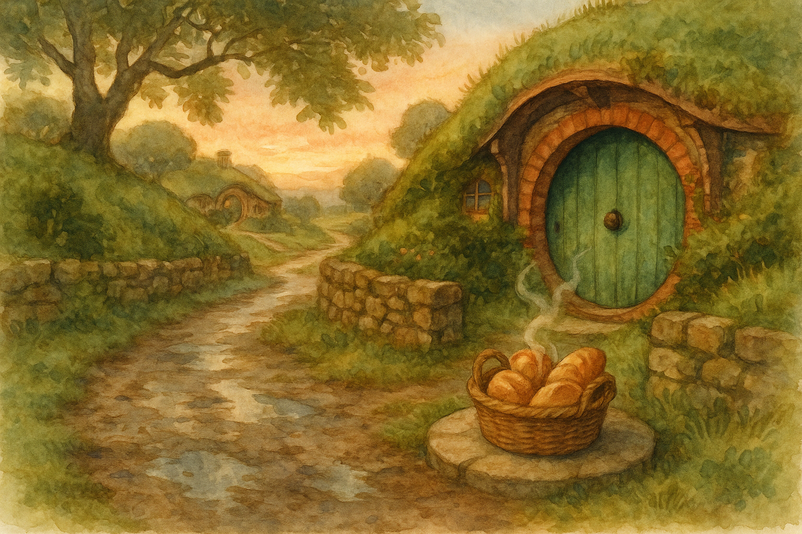

Before the sun had quite made up its mind, I found myself on the lane with a little basket and a larger appetite. The baker in Hobbiton had been up long before the respectable folk, and the smell of warm bread drifted out as if it were a sort of invitation written in butter.
There are mornings when the world feels very large — all edges and errands — and then a small thing (a loaf, a crust, a bit of heat held in your hands) reminds you that you belong in it after all. It is a useful lesson in Middle Earth: courage is not always a sword-song. Sometimes it is simply choosing to begin kindly, and letting that kindness set the pace.
As I walked back up toward the Hill, I heard the puddles answering my boots and thought of my own line: "There is nothing like looking, if you want to find something." I was not hunting dragons — only breakfast — yet I did find what I needed: a quiet comfort, and the pleasant notion that the Road can wait until after the kettle has had its say.
Filed under: Middle Earth • Written at Bag End